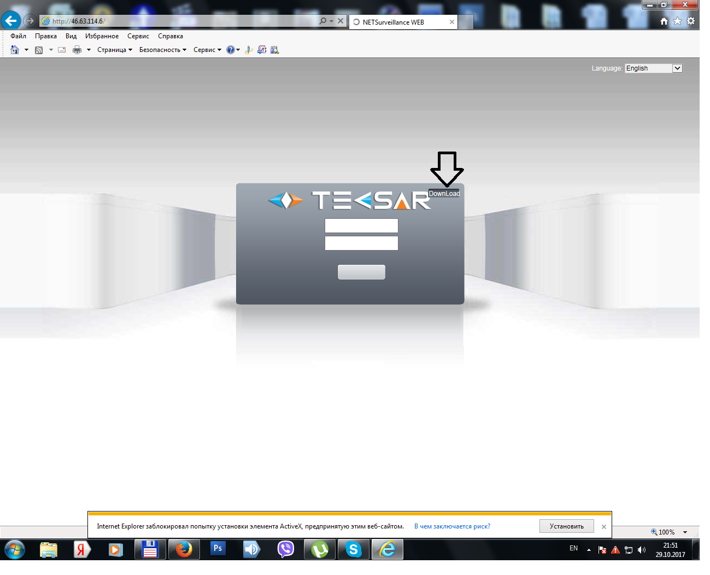
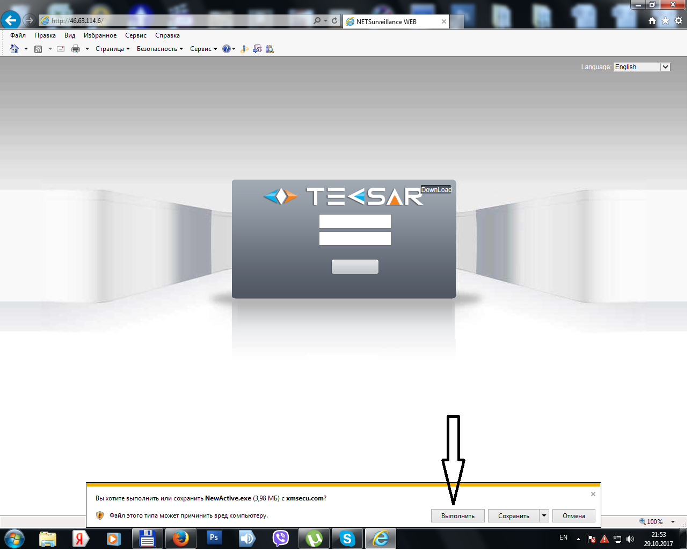
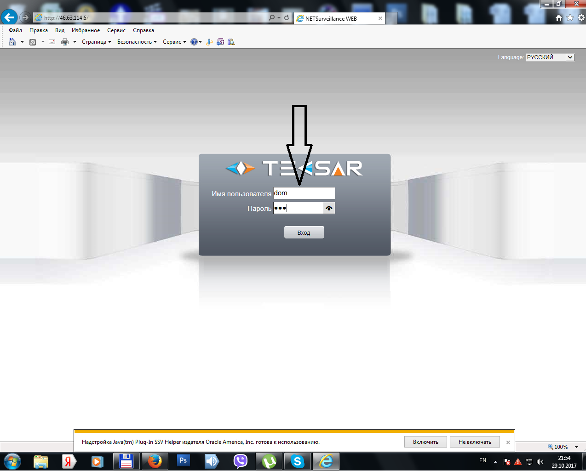

Настройка на комп’ютері
Заходити через Internet Explorer. В адресній строчці набрати адресу реєстратора:
46.63.114.6
Відкриється вікно реєстратора. При першому вході необхідно встановити настройку натиснувши на загрузку(дивіться на стрілочку).

Погоджуватися на всі запити і встановити надбудову в браузер(стрілка)

Після установки відкриється вікно і можно заходити в реєстратор.
Логін :Dom, пароль:123
